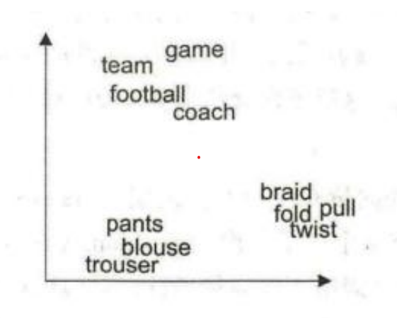
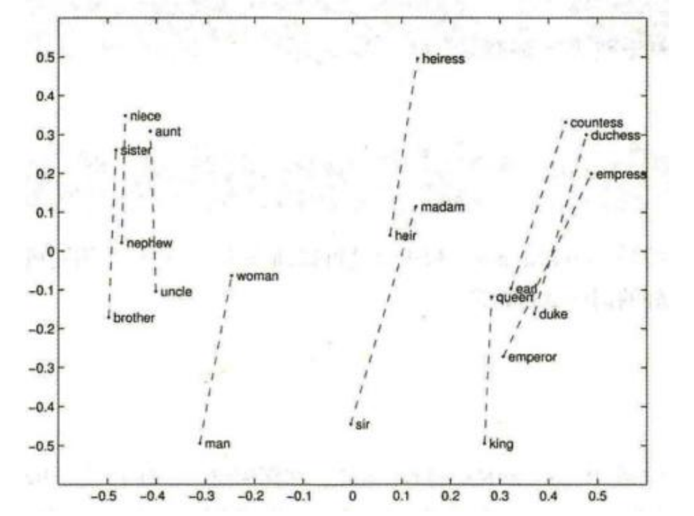
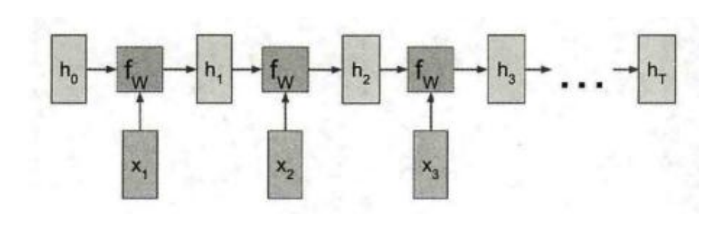
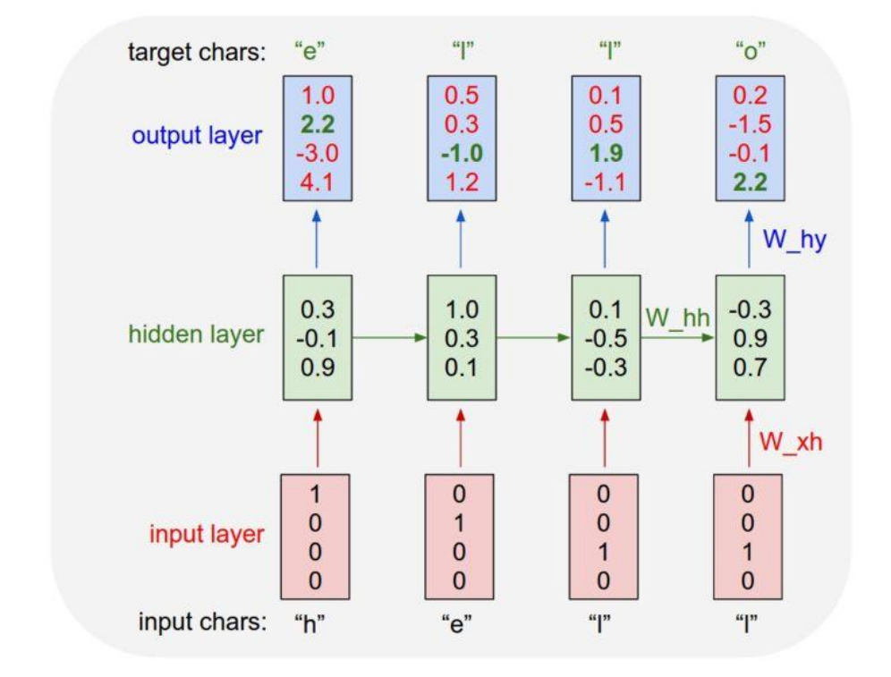

Get Started
Le traitement du langage naturel (TAL) est une branche de l'intelligence artificielle et de la linguistique. Le traitement du langage naturel est un sujet très vaste, impliquant de nombreuses directions de recherche telles que la traduction automatique, l'analyse syntaxique et la recherche d'informations. En raison des limitations d'espace, ce chapitre se concentre sur l'explication de deux concepts de base dans le traitement du langage naturel : un vecteur de mot et un réseau de neurones récurrents (RNN).
Vecteur de mot (word vector)
Le traitement du langage naturel étudie principalement les informations du langage. Le langage (mots, phrases, textes, etc.) appartient aux entités abstraites perceptives de haut niveau produites au cours du processus de perception humaine, tandis que la parole et les images appartiennent aux signaux d'entrée originaux de niveau inférieur. L'expression des données de parole et d'image ne nécessite pas de codage spécial, à une séquence et une signification inhérentes. Les chiffres approximatifs seront considérés comme des caractéristiques approximatives. Tout comme les images sont constituées de pixels, la langue est constituée de mots ou de lettres, et la langue peut être convertie en un ensemble de mots ou de caractères.
Ce type de méthode de représentation de mots est très simple et facile à mettre en œuvre, ce qui résout le problème selon lequel il est difficile pour le classificateur de traiter les données d'attributs (catégoriques). Ses inconvénients sont également évidents : trop de répétition, incapable de refléter la relation entre les mots. On peut voir que les représentations de ces dix mots sont orthogonales les unes aux autres, c'est-à-dire que deux mots quelconques ne sont pas liés et que la distance entre deux mots quelconques est également la même. Dans le même temps, à mesure que le nombre de mots augmente, les dimensions du vecteur One-Hot augmenteront également fortement. S'il y a 3000 mots différents, alors chaque vecteur du mot One-Hot a 3000 dimensions, une seule position est 1, et les positions restantes sont toutes les deux 0, . Bien que le format de codage One-Hot fonctionne bien dans les tâches traditionnelles, car les dimensions des mots sont très élevées, des catastrophes dimensionnelles se produisent souvent lorsqu'elles sont appliquées à l'apprentissage en profondeur, de sorte que les vecteurs de mots sont généralement utilisés dans l'apprentissage en profondeur
Word Vector, également connu sous le nom de Word Embedding, n'a pas de définition standard stricte. Conceptuellement, cela fait référence à l'inclusion d'un espace de grande dimension (des dizaines de milliers de mots, des centaines de milliers de mots) dont la dimension est le nombre de tous les mots dans un espace vectoriel d'une dimension beaucoup plus faible (généralement 128 ou 256 dimensions) , chaque mot ou phrase mappé sur un vecteur dans le champ du nombre réel.
Il existe des méthodes de formation spéciales pour les guides de mots, qui ne seront pas détaillées ici.Les lecteurs intéressés peuvent apprendre la série de cours CS224 de Stanford (y compris le CS224D et le CS224N). Il faut savoir que la caractéristique la plus importante des vecteurs de mots est que les distances des vecteurs de mots pour des mots similaires sont similaires. La dimension vectorielle du mot est constante et chaque dimension est un nombre continu. Par exemple : Si nous utilisons un vecteur de mots 2D pour représenter dix mots : football, match, entraîneur, équipe, pantalon, pantalon, tricot de chemise, pli et pull, les résultats visibles sont les suivants. On constate que les mots d'un même type (mots liés au football, mots liés aux vêtements et aux actions) sont regroupés et relativement proches les uns des autres.
On voit que les mots représentés par des vecteurs de mots auront non seulement des dimensions plus petites (de 10 dimensions à 2 dimensions), mais contiendront également des informations sémantiques plus logiques. En plus de la distance la plus proche entre les mots adjacents, les vecteurs de mots présentent de nombreuses caractéristiques intéressantes, comme le montre la figure ci-dessous. Les deux extrémités de la ligne pointillée sont des mots masculins et féminins, tels que : oncle et oncle, frère et sœur, homme et femme, mari et dame. On peut voir que la direction et la longueur de la ligne pointillée sont les mêmes, vous pouvez donc penser à vecteur (roi) -vecteur (reine) ≈ vecteur (homme) - vecteur (femme), une autre façon d'écrire est vecteur (roi ) - vecteur (homme) ≈ vecteur ( reine) -vecteur (femme), c'est-à-dire que le roi peut être considéré comme un roi masculin, et la reine peut être considérée comme une reine, et le roi masculin est soustrait, ne laissant que les caractéristiques de le roi; La reine soustrait la femelle, et seuls les traits du roi restent, donc les deux sont les mêmes.
Dans PyTorch, il existe une couche spéciale contenant des vecteurs de mots intégrés, qui est utilisée pour réaliser le mappage entre les mots et les vecteurs de mots. nn , l'incorporation à un poids et la forme est (number_words, embedding_dim). Par exemple, pour les 10 mots de l'exemple ci-dessus, chaque mot est représenté par un vecteur à deux dimensions et le poids correspondant est une matrice 10 * 2. La forme d'entrée intégrée est N * W, N est la taille du lot, W est la longueur de la séquence et la forme de sortie est N *W*embedding_dim. L'entrée doit être LongTensor et le FloatTensor doit être converti en LongTensor via la méthode tensor.long().
Les RNN
Le nom complet de RNN est Recurrent Neural Network. Il existe également un réseau de neurones récurrents en apprentissage profond, également appelé RNN. Il faut le distinguer ici. Sauf indication contraire, la plupart des RNN que nous rencontrons se réfèrent aux premiers. Lorsque vous utilisez l'apprentissage en profondeur pour résoudre des problèmes de PNL, RNN est presque un outil indispensable. En supposant que nous ayons maintenant une représentation vectorielle de chaque mot, comment obtiendrons-nous le sens de la phrase composée de ces mots ? Nous ne pouvons pas simplement analyser un mot, donc chaque mot dépend du précédent, il suffit de regarder un mot en particulier pour obtenir des informations sur la phrase. RNN peut très bien résoudre ce problème, en calculant un nouvel état en combinant à chaque fois l'état caché du mot précédent et du mot courant.
Le schéma d'architecture RNN est présenté ci-dessous.
: La séquence des mots d'entrée (total des mots T T T), chaque mot est un vecteur, généralement représenté par un vecteur de mot.
h 0 , h 1, h 2, h 3 , . . . , h T h_0,h_1,h_2,h_3,...,h_T h0,h1,h2,h3,...,hT : l'élément caché (total T + 1 T+1 T+1a) , Chaque élément caché est compté à partir du mot précédent, on peut donc considérer qu'il contient les informations de tous les mots précédents. h 0 h_0 h0 représente l'information brute, qui est généralement initiée avec un vecteur de tous les zéros.
f W f_W fW : fonction de transformation en fonction de l'entrée courante x t x_t xt et de l'état de l'objet caché précédent h t − 1 h_{t-1} ht−1, calcule le nouveau méta-état caché h t h_t ht. On peut considérer h t − 1 h_{t-1} ht−1avant t − 1 t-1 t−1 les fichiers contiennent des informations sur les mots, à savoir x 1 , x 2 , . . . , xt − 1 x_1,x_2,...,x_{t-1} x1,x2,...,xt−1 par f W f_W fW Utilisation de ht − 1 h_{t-1} ht −1 avec xt x_t xtcomputed ht h_t ht, peut être considéré comme incluant par tt t word information. Il est important de noter que chaque opération arithmétique h t h_t ht utilise toutes le même f W f_W fW。 f W f_W fW il s'agit généralement d'une opération de multiplication matricielle.
RNN va finalement sortir les informations de tous les éléments cachés, en général seules les informations du dernier élément caché sont utilisées, qui peuvent être considérées comme contenant les informations de la phrase entière.
L'architecture RNN illustrée dans la figure ci-dessus est généralement appelée RNN vanille, et elle est facile à mettre en œuvre, simple et intuitive, mais souffre de graves problèmes de latence de gradient et de rafale de gradient et est difficile à former. Actuellement, un type d'architecture RNN appelé LSTM est couramment utilisé dans l'apprentissage en profondeur. Le nom complet de LSTM est réseau de mémoire à long terme, c'est-à-dire réseaux de mémoire à long terme. Sa structure est illustrée dans la figure ci-dessous. Sa structure est similaire à la vanille RNN. Il calcule également un nouvel état grâce à l'utilisation continue de l'état précédent et de l'entrée actuelle. Mais f W f_W fW Les fonctions sont plus complexes, sauf pour l'état caché (h h h état caché) et l'état de la cellule c c c. Il y a deux sorties pour chaque LSTM, dont l'une est la suivante ht h_t ht（ ht h_t ht en même temps, la branche est créée pour y conduire), une au-dessus de ct c_t ct。 ct c_t ct le dont la présence peut bien supprimer les problèmes de disparition Gradient et explosion de gradient.
LSTM est une bonne solution à de nombreux problèmes dans le processus de formation RNN, et il montre de meilleures performances que le RNN vanille dans presque tous les types de problèmes.
Remarque : la forme de la sortie n'a rien à voir avec le nombre de couches LSTM, seulement la longueur de la séquence, tandis que hn et cn sont l'inverse.
En plus de LSTM, il y a aussi LSTMCell dans PyTorch. LSTM est une abstraction de la couche LSTM et peut être considérée comme un composant de plusieurs cellules LSTM. L'utilisation de LSTMCell peut entraîner des opérations plus précises. Il existe également une variante du LSTM appelée Gated Recurrent Unit. Par rapport au LSTM, le GRU est plus rapide et a des effets similaires. Dans certains scénarios avec des exigences de vitesse très strictes, GRU peut être utilisé comme alternative au LSTM.
charRNN
CharRNN apprend l'ensemble de caractères anglais (notez qu'il s'agit de lettres et non de mots anglais) à partir de textes volumineux et peut générer automatiquement le texte correspondant. Par exemple, dans le cas du projet de génération des poèmes de Shakespear sur lequel nous nous sommes documenté, l'auteur a formé CharRNN avec une dramatisation shakespearienne, et a finalement obtenu un programme qui pourrait imiter le drame de l'écriture de Shakespeare, le texte de Shakespeare résultant comme suit :
PANDARUS:
Alas, I think he shall be come approached and the day
When little srain would be attained into being never fed,
And who is but a chain and subjects of his death,
I should not sleep.
Second Senator:
They are away this miseries, produced upon my soul,
Breaking and strongly should be buried, when I perish
The earth and thoughts of many states.
DUKE VINCENTIO:
Well, your wit is in the care of side and that.
Second Lord:
They would be ruled after this chamber, and
my fair nues begun out of the fact, to be conveyed,
Whose noble souls I’ll have the heart of the wars.
Clown:
Come, sir, I will make did behold your worship.
VIOLA:
I’ll drink it.
L'auteur a également fait de nombreuses expériences intéressantes, comme imiter le code source Linux pour écrire des programmes, imiter le code source LaTeX open source pour écrire des programmes, etc. Le principe de CharRNN est très simple, et il se divise en deux parties : l'apprentissage et la génération. Le temps de formation est le suivant, qui est :
Par exemple, dans le texte hello world de Shakespeare, cette phrase peut être transformée en une tâche de classification. L'entrée du RNN est hello world. Pour sortir chaque élément caché du RNN, une couche entièrement connectée est utilisée pour prédire le mot suivant.
Le premier élément caché, entrez h, contient h informations et sortie prédictive e；
Le deuxième élément caché, entrez e, contient les informations et la sortie prédictive l；
Le troisième élément caché, entrez l, contient les informations hel et la sortie prédictive l；
Le quatrième élément caché, entrez l, contient les informations et la sortie prédictive o； Et beaucoup plus.
Comme mentionné ci-dessus, CharRNN peut être considéré comme un problème de classification : prédire le caractère suivant en fonction du caractère actuel. Pour les caractères anglais, le nombre total de caractères utilisés dans le texte ne dépasse pas 128 (en supposant 128 caractères), donc le problème de prédiction peut être changé en un problème de classification de 128 : la sortie de chaque élément caché inséré dans une couche entièrement connectée, calculez la probabilité que la sortie appartienne à 128 caractères et calculez la perte d'entropie croisée.
Cela peut se résumer en une phrase : CharRNN transforme un problème de génération en un problème de classification en utilisant le cas descriptif caché du mot courant pour prédire le mot suivant.
Une fois la formation terminée, nous pouvons utiliser la grille pour générer le texte pour écrire de la poésie. Les étapes générées sont illustrées dans la figure ci-dessous.
-
Entrez d'abord la lettre de départ et calculez la probabilité que la sortie soit pour chaque lettre.
-
Le caractère avec la probabilité la plus élevée est sélectionné pour être le résultat.
-
Prenez la sortie de l'étape précédente comme entrée, continuez l'entrée dans la grille et calculez la probabilité que la sortie soit pour chaque caractère.
-
Continuez à répéter ce processus.
-
Enfin, tous les personnages sont clipsés ensemble pour obtenir le résultat final.
CharRNN a également un certain manque de précision, par exemple, il utilise la forme One-Hot pour représenter des mots plutôt que des vecteurs de mots ; RNN est utilisé à la place de LSTM.
Procédure d'implémentation
-
1-Le modèle est basé sur des caractères. La taille du vocabulaire s’élève à 34 caractères au total (les lettres de l’alphabet et certains caractères spéciaux utilisés dans les poèmes de Victor Hugo).
Nous ne prenons pas les mots comme unité du vocabulaire. Dans ce cas-là, il contiendrait des milliers de termes différents, ce qui rendrait la gestion de la dataset assez complexe. -
2- Nous ne prenons pas les mots comme unité du vocabulaire. Dans ce cas-là, il contiendrait des milliers de termes différents, ce qui rendrait la gestion de la dataset assez complexe.
-
3-Avant l'entraînement, nous mappons des chaînes sur une représentation numérique. C-à-d que nous créons deux dictionnaires : l'un mappant les caractères aux nombres et l'autre les nombres aux caractères.
-
4-Pour éviter qu’un caractère ait plus de poids qu’un autre, nous basculons vers la représentation one hot encoding. Nous distinguons chaque caractère par un input séparé ie un vecteur unique contenant qu’un seul 1 à la ième position représentant le ième caractère du vocabulaire. Ainsi, toutes les composantes du vocabulaire ont la même importance.
Note : Le vecteur appartient à R34, avec un seul 1 et trente-trois 0.
-
5- Nous divisons notre dataset de poèmes en n batch défini de séquences de taille indéfinie. Et ce, afin d'entraîner notre modèle sur plusieurs petits morceaux de poèmes au lieu de mettre en entrée tous les poèmes de notre vocabulaire à la fois.
Nous avons besoin d’une epoch pour entraîner notre modèle sur l’ensemble des batch composant notre dataset. -
6-Étant donné un caractère ou une séquence de caractères, quel est le prochain caractère le plus probable ? C'est la tâche que nous allons entraîner pour notre modèle à effectuer. L'entrée du modèle sera une séquence de caractères d’un certain batch x et nous entraîneront le modèle à prédire la sortie - le caractère suivant à chaque pas de temps.
Puisque les RNN conservent un état interne qui dépend des éléments vus précédemment, étant donné tous les caractères calculés jusqu'à ce moment, quel est le caractère suivant ?
Nous allons plus précisément utiliser les LSTM. La mémoire à long court terme (LSTM) est une architecture de réseau de neurones récurrents artificiels utilisée dans le domaine de l'apprentissage en profondeur. Contrairement aux réseaux de neurones à réaction standard, LSTM a des connexions de retour. -
7-Pour la construction des modèles nous utiliserons tf.keras.Sequential. Nous aurons besoin de 4 couches de layers.
tf.keras.Input : La couche d'entrée. Une table de recherche entraînable qui mappera les nombres de chaque caractère à un vecteur. tf.keras.layers.LSTM : Nous utiliserons deux couches de LSTM. C’est à ce niveau que la prédiction s’effectue. tf.keras.layers.Dense: C’est la couche de sortie -